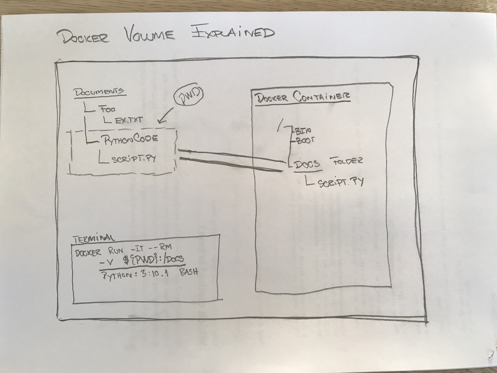

Agenda
Write a requirements list in a text file.
Install requirements specified in the requirements file.
Create a requirements text file from your installed modules (requirements.txt)
Create a Dockerfile.
Include installation of requirements in the Dockerfile.
Sharing code and requirements in team.
Basic docker run command used today
docker run -it --rm -v ${PWD}:/docs python:3.10.1 bash
Docker, dockerfile & requirements.txt
# pip list
Package Version
---------- -------
pip 20.1.1
setuptools 46.4.0
wheel 0.34.2
# pip install requests
# pip list
Package Version
---------- ---------
certifi 2020.6.20
chardet 3.0.4
idna 2.10
pip 20.1.1
requests 2.24.0
setuptools 46.4.0
urllib3 1.25.10
wheel 0.34.2
requirements.txt
certifi==2020.6.20
chardet==3.0.4
idna==2.10
requests==2.24.0
urllib3==1.25.10
Install the listed modules in reuirements.txt
# pip install -r requirements.txt
Generate a requirements.txt from your container
# pip freeze > requirements.txt
Docker Image & requirements.txt
You can create your own dockerfile and in this include the command:
RUN pip install -r requirements.txt
Dockerfile
# the base image
FROM python:3.8-alpine
# copy all files from dir with Dockerfile and requirements.txt to /app folder in image
COPY . /app
# cd into /app folder with (in this case only) the requirements.txt
WORKDIR /app
# install python modules
RUN pip install -r requirements.txt
# Change into / as startingpoint of container
WORKDIR /
# when container runs it should start in a ash terminal
CMD ["ash"]
Github, Dockerfile & requirements.txt
.
├── .gitignore
├── Dockerfile
├── modules
│ ├── bar.py
│ ├── foo.py
│ └── util.py
├── requirements.txt
└── script.py
Ex 1: Clone, build and run
Clone this repository:
Build an Image based on the repositorys Dockerfile.
docker build --tag clbo/python
Run a container based on this image
docker run -it --rm -v ${PWD}:/docs clbo/python